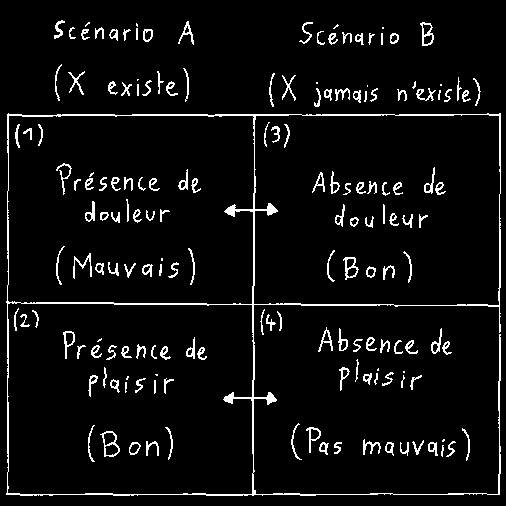

Accueil
Accueil
L'asymétrie de David Benatar
On ne peut pas parler d’antinatalisme sans évoquer David Benatar. Le professeur Benatar est un philosophe sud-africain ainsi que le directeur du Centre de Bioéthique à l’université du Cap. Il est connu pour avoir écrit en 2006 Better Never to Have Been: The Harm of Coming into Existence (Mieux vaut n’avoir jamais été : le préjudice de venir au monde), un texte fondateur de l’antinatalisme. Un de ses arguments en faveur de l’antinatalisme est l’« asymétrie entre le plaisir et la douleur » qu’il expose au chapitre 2 de son livre. Cet argument que Benatar avait déjà formulé dans un article de 1997 est malheureusement souvent mal compris. C’est pourquoi je me propose ici de le présenter d’une manière qui, je l’espère, saura se montrer suffisamment claire.
Benatar introduit son argument avec quatre jugements de valeur. Une fois acceptés, ils permettront de conclure que venir au monde est toujours un préjudice.
-
La présence de douleur est
mauvaise,
et - la présence de plaisir est bonne.
-
L’absence de douleur est bonne, même
si ce bien n’est profité par personne,
tandis que - l’absence de plaisir n’est pas mauvaise à moins qu’il y ait quelqu’un pour qui cette absence est une perte.
Vous constatez qu’il y a une symétrie entre (1) jugé « mauvais » et son opposé (2) « bon », mais une asymétrie entre (3) « bon » et (4) jugé « pas mauvais », au lieu d’être symétriquement jugé « mauvais ». Il nous faut maintenant prendre le temps de défendre ces quatre jugements.
Certains considèrent que cette introduction est trop simpliste car elle réduirait l'existence à la douleur et au plaisir. Benatar précise pourtant que la douleur et le plaisir ne sont utilisés que comme exemples de harms et benefits (Benatar 2006, p. 30) que je traduirai respectivement par préjudices et bénéfices.
Concernant (1), certains réfutent que la douleur est forcément mauvaise. Elle permet par exemple de nous signaler une blessure à traiter, ce qui est à terme un bénéfice. Remarquez toutefois que la douleur n'est dans ce cas qu'instrumentalement bonne (et encore, un signal indolore ferait aussi bien l'affaire) pour l'individu qui se blesse et qui de toute évidence existe déjà. La douleur demeure intrinsèquement mauvaise et le mieux reste encore de ne pas se blesser en premier lieu. C'est pourquoi il me paraitrait complètement absurde de citer la douleur comme une bonne raison de naitre. Ajoutons que beaucoup de douleurs (et de préjudices en général) n’apportent absolument rien de bon, même de manière instrumentale.
Concernant (2), certains suggèrent que le plaisir d’un individu n’est pas toujours bon car il peut nuire à autrui. C’est vrai, mais ce n’est pas la question. Ce que nous voulons savoir ici, c’est si naitre est bon pour l’individu qui nait. Nous ne considérons donc le plaisir que de manière individuelle et non collective.
Concernant la première partie de (3), « l’absence de douleur est bonne », certains rétorquent que cette absence n’est pas bonne mais neutre. Il est vrai que ne pas ressentir de douleur est une expérience neutre : on n’expérimente ni quelque chose de bon ou de mauvais. Mais quand Benatar dit que (3) est bon, il veut dire que (3) est comparativement bon par rapport à (1), c'est-à-dire mieux que (1). Si je vous donnais le choix entre vous faire du mal ou vous laisser tranquille, vous choisiriez évidemment la deuxième option car elle est bonne comparée à la première, bien qu'intrinsèquement neutre.
Concernant la deuxième partie de (3), « même si ce bien n’est profité par personne », certains pensent qu'il est nécessaire qu'un individu existe afin que la notion même de bien pour cet individu fasse sens. Mais penchons-nous donc sur le cas du suicide. Celui qui songe à se tuer ne pense pas que la mort sera pour lui un état intrinsèquement bon, ce qui serait absurde puisqu'un mort est incapable d'expérimenter un quelconque bien. Il pense simplement que ne plus exister est un meilleur scénario par rapport au scénario dans lequel il continuerait à souffrir en restant en vie, ce qui n'est pas absurde. Il n'est ainsi pas absurde de dire que l'absence de douleur et bonne par rapport à sa présence, même si cette absence ne peut être atteinte qu'en n'existant pas.
Concernant (4), certains accusent Benatar de changer sa manière de juger. Pour (4), si l'absence de plaisir n'est pas mauvaise pour l'individu qui n'existe pas, c'est tout simplement parce que cet individu n'est en fait personne. Vous me direz cependant que (3) était jugé bon dans le sens comparatif et qu'en ce sens, il serait logiquement possible d'estimer que l’absence de plaisir pour un individu qui n'existe pas mais pourrait exister est mauvaise. Seulement, l’argument de Benatar ne se veut pas logique mais axiologique (Benatar 2013, p. 126). L’axiologie est le domaine de la philosophie qui s’intéresse aux valeurs. Or, selon Benatar, l'asymétrie entre (3) et (4) permet d'expliquer quatre autres asymétries (Benatar 2006, p. 31-36), quatre jugements de valeur qui sont partagés par beaucoup d'entre nous. Les noms de ces quatre asymétries que je résume ci-dessous sont tirés de l'article de Benatar paru en 2013.
L’asymétrie des devoirs procréatifs
Nous avons le devoir de ne pas faire d’enfant qui connaitrait une vie misérable. En revanche, nous n’avons pas le devoir de faire un enfant qui connaitrait une vie heureuse.
L’asymétrie de la bienfaisance prospective
Il semble étrange de dire faire un enfant pour que celui-ci en soit bénéficié. En revanche, il n'est pas étrange de citer l'intérêt du potentiel enfant pour dire qu'il ne faudrait pas le faire. Si l'on croit bénéficier l'enfant en le faisant, il semble que beaucoup de couples devraient faire encore plus d'enfants qu'ils en ont déjà.
L’asymétrie de la bienfaisance rétrospective
Un parent peut regretter d’avoir fait un enfant. Il peut le regretter pour lui-même mais également pour son enfant. En revanche, si un couple ne parvient pas à faire un enfant, il éprouve uniquement du regret pour lui-même et non pas pour l'enfant qui aurait pu naitre.
L’asymétrie entre les personnes éloignées souffrantes et les absentes heureuses
On éprouve du regret lorsque l'on songe aux habitants de terres éloignées qui souffrent. En revanche, on n'éprouve pas de regret lorsque l'on pense (et encore, on y pense à peu près jamais) par exemple aux Martiens qui auraient pu profiter de la vie mais n'existent pas.Indépendamment l'un de l'autre, (3) et (4) sont justifiés. Les objections surviennent lorsque l'on propose de prendre (3) et (4) conjointement. Il faut toutefois se garder de rejeter trop vite cette proposition à cause des quatre asymétries ci-dessus. Ces asymétries ont moins pour but de prouver l'argument de Benatar que de montrer que nous faisons intuitivement un jugement asymétrique entre l'absence de douleur et de plaisir. Il semble en effet que pour chacune de ces quatre asymétries, nous ne considérons pas comme un réel problème un individu qui pourrait être heureux mais n'existe pas (puisqu'on ne regrette pas cet individu selon les deux dernières des quatre asymétries, il serait exagéré de juger (4) « mauvais » au lieu de « pas mauvais »), alors que nous considérons problématique le fait qu'un individu puisse exister et souffrir. Il est par conséquent tout à fait possible de prendre (3) et (4) conjointement.
Pour celles et ceux qui ne seraient pas convaincus, j'aimerais attirer votre attention sur les deux premières des quatre asymétries qui me paraissent particulièrement persuasives. Imaginez une personne qui, si elle donnait naissance, promettrait une vie de piètre qualité à son enfant – Benatar évoque le cas du parent porteur d'une sérieuse maladie génétique ou celui d'une mère de quatorze ans qui ne pourrait pas dispenser une éducation convenable à cause de son jeune âge (Benatar 2006, p. 19). Beaucoup, je l'espère, s'accorderaient à dire qu'il serait bon à l'égard du potentiel enfant de s'abstenir de le mettre au monde dans ces conditions. Si au contraire on s'autorise à procréer sous prétexte qu'il est impossible de faire du mal à un individu pas encore né, cela revient à condamner son enfant car dans ces conditions, rien que sa naissance deviendrait la cause de bon nombre de ses futurs préjudices. Vous me direz que je parle ici de vies particulièrement misérables et que cela ne concerne par conséquent pas la procréation en général. Considérez toutefois ceci : Benatar fait remarquer que beaucoup de gens pensent que perdre un membre durant sa vie n'est pas gravissime au point qu'il vaille mieux ne plus exister et qu'en même temps, beaucoup de ces mêmes gens pensent qu'il vaut mieux ne pas mettre au monde un enfant qui naitrait avec un membre en moins (ibid. p. 23). Cela montre qu'il y a une distinction cruciale entre commencer une vie et continuer une vie. Benatar donne cette analogie : si un film doit être un véritable navet pour nous faire quitter la salle de cinéma, il suffit qu'il soit assez ennuyeux pour que nous regrettions de l'avoir commencé. De même, les préjudices doivent être particulièrement pénibles pour en arriver à se suicider mais n'ont pas besoin d'être aussi atroces pour se contenter d'estimer que la vie ne valait pas la peine de naitre. Nous savons pertinemment que chaque vie a à subir des maladies, des blessures, des rejets, des anxiétés, l'ennui, la fatigue, le froid, la faim, des chagrins, des regrets, des douleurs, des déceptions, la peur, la honte, la vieillesse ou le deuil par exemple. Pour nous qui sommes vivants, ces préjudices paraissent relativement bénins. Il ne s'ensuit pas pour autant que nous devrions considérer comme anodin le fait de procréer des individus voués à connaitre ces préjudices. Si nous ne recommandons pas un film ennuyeux à nos amis, pourquoi imposerions-nous tant d'ennuis à nos enfants ? Pour les optimistes qui m'accuseraient d'avoir passé sous silence les bénéfices de la vie, n'oubliez pas que ces bénéfices ne profitent qu'à celui déjà en vie. Celui qui n'existe pas ne saurait regretter le plaisir qu'il n'aura jamais eu ou voir son absence comme une perte.
Maintenant que nous avons montré que l'asymétrie de Benatar est acceptable, nous pouvons savoir s'il vaut mieux naitre ou ne pas naitre. Pour cela, comparons deux scénarios : un scénario A dans lequel un individu X existe et un scénario B dans lequel ce même X jamais n'existe. En A, il y a (1), une présence de douleur qui est mauvaise, ainsi que (2), une présence de plaisir qui est bonne. En B, il y a (3), une absence de douleur qui est bonne, ainsi que (4), une absence de plaisir qui n'est pas mauvaise.
On peut démontrer que B est préférable à A en comparant (1) avec (3) et (2) avec (4). Comme (4) n'est pas mauvais, il n'est comparativement pas pire que (2). Si (4) n'est pas pire que (2), ce dernier n'est pas mieux que (4) et lui est donc équivalent. Puisque (1) est mauvais et que (3) est bon, on constate que B a un avantage sur A.
Une autre possibilité est de comparer (2) avec (3) et (1) avec (4). Comme (2) et (3) sont tous les deux bons, ils se valent. Puisque (2) est mauvais et que (4) n'est pas mauvais, B a toujours un avantage sur A.
C'est ainsi que Benatar se permet d'affirmer qu'il vaut mieux n'avoir jamais été et que venir au monde est toujours un préjudice. Remarquez que son argument n'a pas besoin de tenir compte de la quantité de plaisir et de douleur que la vie apporte. À cause de l'asymétrie, le scénario B est en effet toujours préférable à A, même si la vie débordait de plaisir et ne contenait qu'une once de douleur. Si une hypothétique vie ne recelait aucune douleur, Benatar dit que nous devrions alors être indifférents quant à son existence ou son inexistence (Benatar 2006, p. 29). Malheureusement, aucune vie ne se voit épargnée par la douleur. C'est en fait tout l'inverse : chacune en regorge.
Ressources
David Benatar, Better Never to Have Been: The Harm of Coming into Existence, Oxford : University Press, 2006.
David Benatar, « Why it is Better Never to Come into Existence », American Philosophical Quarterly, 34/3 (juillet 1997), p. 345-55, https://www.jstor.org/stable/20009904?seq=1#metadata_info_tab_contents.
David Benatar, « Still Better Never to Have Been: A Reply to (More of) My Critics », The Journal of Ethics, 17 (2013), p. 121-51.
University of Cape Town, « David Benatar », https://humanities.uct.ac.za/department-philosophy/staff-david-benatar/overview.
Apostrophe Philosophy, « Antinatalism Explained: The Asymmetry » (29 août 2019), YouTube, https://www.youtube.com/watch?v=w4LWznbnAC4.
Simon Cushing, « David Benatar's Anti-natalist argument » (2 décembre 2022), YouTube, https://www.youtube.com/watch?v=XP_0Nn6ATEo.